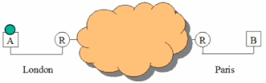
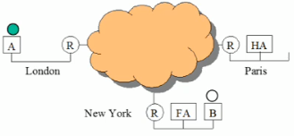
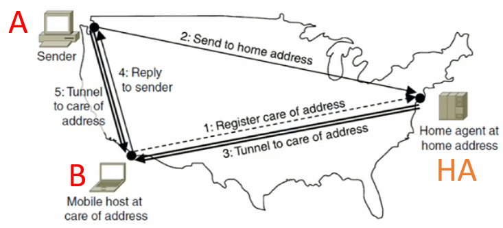

We learnt from the previous section on IP that the overall IP address changes when you move network.
This is because the overall IP address contains a network address.
Nowadays we are so dependant on all the IoT technology we have (mobile phones, tablets, computers, smart TV, smart watch, etc...)
Humans are naturally quite mobile mammals - we like to travel around a lot these days.
But you always want your mobile phone to be reachable, even when you change network. - when you go on holiday to Belgium, it'd be nice to still be able to use the Internet on your phone!
I don't have any other stupid analogies, so I'm just going to use the example from the lecture as that best explains the topic:
In this example, two mobile phones A and B are trying to communicate using Skype over a network...
Figure 5.8a
Let's study Figure 5.8a in a bit more detail:
Then just for shits-and-giggles, mobile phone B moves to New York!
Figure 5.8b
Let's study Figure 5.8b in a bit more detail:
In this example, computer A is trying to send stuff to mobile B across a network...
Figure 5.8b
Let's study Figure 5.8b in a bit more detail:
In Mobile IPv6 we can optimise the path for subsequent packets.